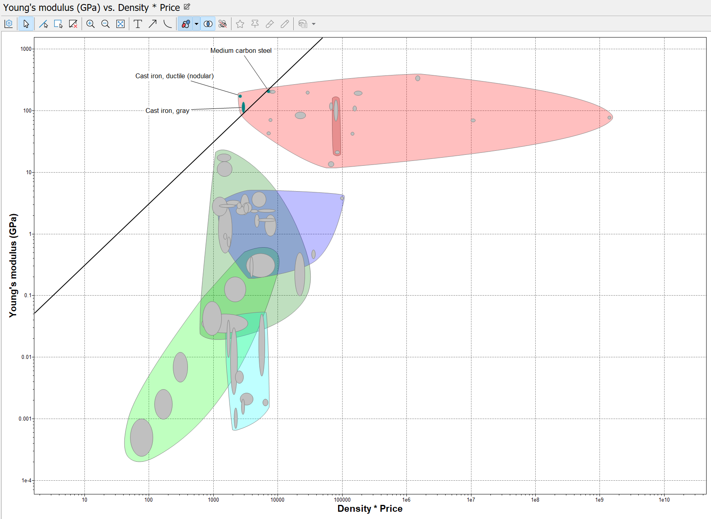

Summary
In Project Two, our team was tasked with creating a system for securely transferring surgical instruments to an autoclave for sterilization. We used rapid prototyping and physical computing techniques to design and build a container for the instruments and a computer program to control a robotic arm. As a member of the computing team, I contributed by developing a Python program to control the arm. In addition to the technical aspects of the project, we also had the opportunity to learn about the engineering design process, from conceptualization to presentation. I had the chance to present our finished product to Instructional Assistant Interns during a project interview.
Skills
As a member of the computation team in project 2, I had the opportunity to hone my programming skills, particularly in Python. I learned how to design and implement algorithms to solve complex problems, and gained valuable experience working with other team members to collaboratively develop code. Through this experience, I was able to deepen my understanding of the foundational principles of computing and become a more effective and proficient programmer.
.
In addition to computing, I also explored the material selection process for engineering to find the best option for a sterilization container. I used Granta Edupack to determine and graph the most suitable material using MPI (Material Property Index).
Used Granta Edupack to plot the MPI and perform a material selection.
Design Process
The following are documents outlining the design process throughout project 2.